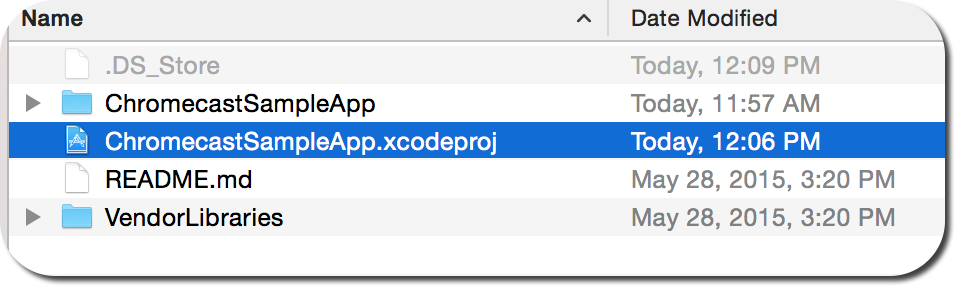
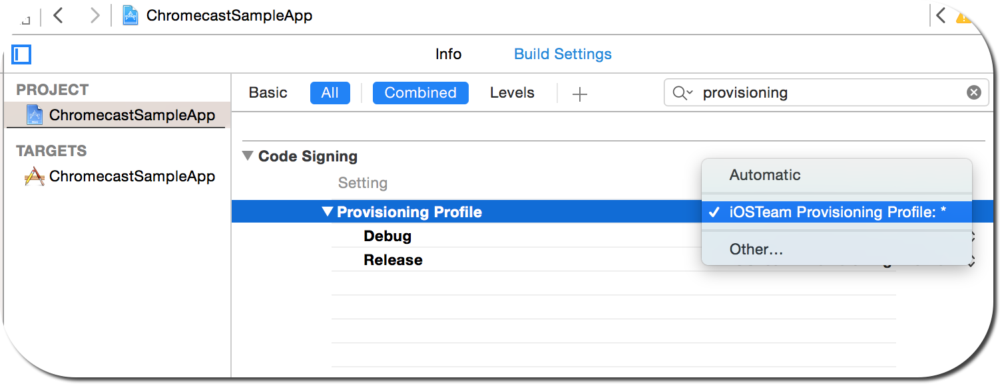
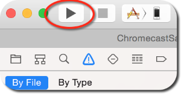
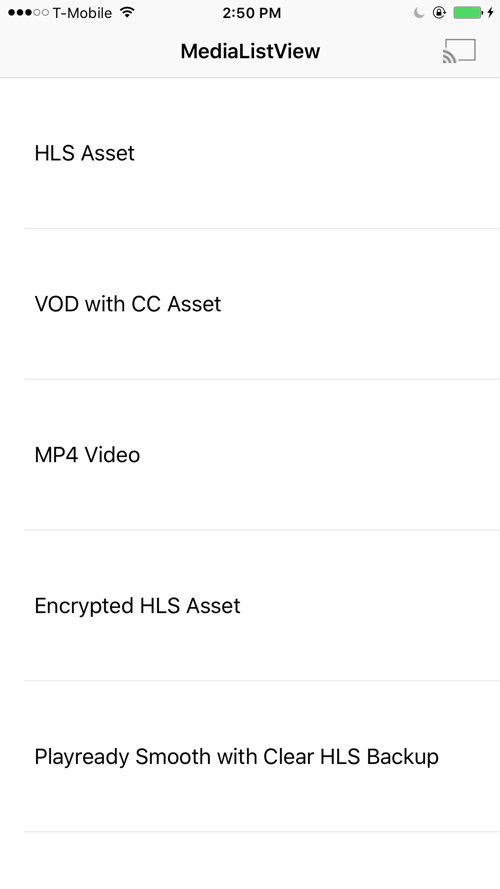
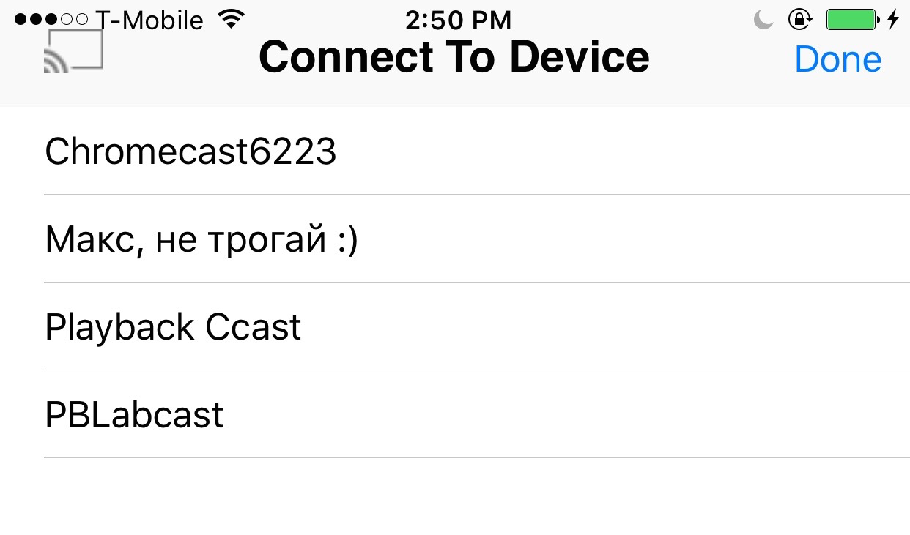

Ooyala provides a sample sender application for iOS that runs a working version of
the sender and receiver components of the Ooyala Chromecast Integration.
Important: This topic contains older information and has been deprecated. For the
latest information about Ooyala integration with Chromecast, see
Chromecast Integration.
To perform the following steps to run the iOS sample application you must have:
- An Apple computer running the latest version of Xcode with a developer license
installed.
- A receiver with the Chromecast module enabled.
- An iOS device running iOS 7 or newer with the Chromecast App installed and
paired with the receiver. This process is well documented by following the set
up steps that appear when the app is opened on the device.
Note: If you are repeating these steps, make sure the app is removed from your device
before beginning the second pass.
-
Clone the Ooyala SDK for iOS Sample Apps repository.
-
Navigate to the ios-sample-apps/ChromecastSampleApp directory on your local
system.
-
Open the ChromeCastSample App folder.
-
Double click ChromecastSampleApp.xcodeproj to open the project in Xcode.

-
Connect the iOS device to the computer.
-
Go to the provisioning profile settings and select iOSTeam Provisioning
Profile. If you are not able to configure the provisioning profile see the Apple
Support site topic, Creating Your Provisioning Profile.

-
Make sure the test device is unlocked.
-
Select the Play button.

The app opens on your device showing a list of playable videos.

-
Tap the broadcast icon (in the top right corner) to select the Chromecast receiver.
-
Tap to select the correct ChromeCast receiver from the list.

-
Tap to Select the video to send to the receiver.
The app is now playing on the receiver.